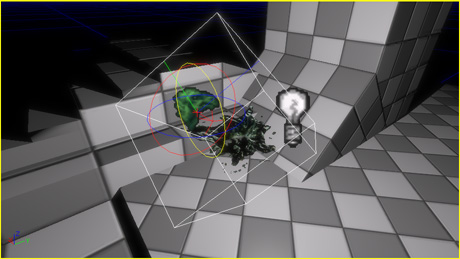
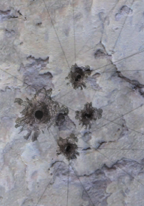

UDN
Search public documentation:
UsingDecalsCH
English Translation
日本語訳
한국어
Interested in the Unreal Engine?
Visit the Unreal Technology site.
Looking for jobs and company info?
Check out the Epic games site.
Questions about support via UDN?
Contact the UDN Staff
日本語訳
한국어
Interested in the Unreal Engine?
Visit the Unreal Technology site.
Looking for jobs and company info?
Check out the Epic games site.
Questions about support via UDN?
Contact the UDN Staff
使用Decals(贴花)
概述
什么是decals?
“静态”的decals
“静态”的decals是指放置在UnrealEd关卡中的decals。除了静态的deca具有较少的多边形以及不进行碰撞、阻挡或投射阴影外，它的运行时消耗大约和静态网格物体一样。“动态的”decals
“动态的”decals是指在游戏运行过程中产生的decals—比如，武器碰撞效果。游戏中产生的Decals在第一次创建时具有较大消耗，一旦创建后，每帧的消耗和静态decal一样(仅描画函数的消耗)。Decal 材质
- 对于雾来说，它使用透明材质的Decals和其它的透明网格物体类型的渲染是不同的。
- 使用带光照材质的decals必须把材质中计算出的法线转换为decal切线结构。
- 在编辑decal材质时，将不会编译Decals不使用的Shaders(也就是阴影、z-only、速度等)，这意味着应用到非decal网格物体的decal材质的显示将是不正确的,比如投射阴影、参与到运动模糊中等。
创建decal 材质
Decal 材质和正常材质的创建方式一样，通过在通用浏览器中右击并选择 New Decal Material(新建Decal材质) 。然后为那个材质选择一个名称和目标包并按下 OK(确定) 按钮。您将会在通用浏览器中看到那个新的材质；双击它打开来打开材质编辑器，并配置您的材质。

添加decals到关卡中
创建decals
向场景中添加decals的最简单的方法是，在通用浏览器中选择一个decal材质，然后按下’D’键并左击透视口中的表面即可。这将会创建一个投射到那个表面的decal。同样，您也可以通过正常的右击菜单的Add Actor(添加Actor)选项；然而通过这种方式实例化的decals必须手动地进行定向。
Sizing, tiling and offsetting(大小、平铺以及偏移)
一旦创建了decal，便可以使用平移和旋转空间来放置及定向decal。
非同一缩放控件控制着decal体积的宽度、高度以及远裁平面距离。 通过设置Decal材质的OffsetX、 OffsetY、TileX 和TileY属性，可以使它进行平铺及偏移(移动)。这些属性也可以被连接到非统一缩放控件上；按下shift键并在非统一缩放控件上进行拖拽控制着decal材质的平铺，而按下AlT键并拖拽非同一缩放控件控制偏移。 在以下的图片中，一个宽大的平铺decal覆盖了BSP块之间的缝隙。
控制接受平面
DecalFilter属性范畴内包含了一系列的属性，可以用于控制decal可以投射到的平面。复选框用于控制decal是否可以投射到BSP、静态网格物体、骨架网格物体或地形上。 在以下的图片中，已经设置decal不能投射到BSP上，因此仅部分在静态网格物体上的decal是可见的。 Decals也有过滤器和FilterMode属性，允许基于每个actor来控制decal的投射情况。在下面的例子中，静态网格物体已经被添加为FilterMode 的FM_Ignore，这意味decal将仅忽略那个静态网格物体，不会在它上面投射decal。
Decals也有过滤器和FilterMode属性，允许基于每个actor来控制decal的投射情况。在下面的例子中，静态网格物体已经被添加为FilterMode 的FM_Ignore，这意味decal将仅忽略那个静态网格物体，不会在它上面投射decal。

写给程序员
问题解决
mipmaps冲突
在decal贴图上启用mipmapping，将会在decal边缘周围产生失真。
这里是针对这个问题及其解决方法的详细描述： Decal贴图坐标是通过投射接收几何体到decal图片平面来计算的。 如果接收几何体被decal 平截头体进行了剪切(默认行为)，那么在decal平截头体的外部将不再会有填充物， 并且所有的decal贴图坐标的值将会在[0,1]之间 。 如果decal组件正在投射到地形上或者UDecalComponent::bNoClip设置为TRUE，那么decal几何体将不会被剪切到decal平截头体中；而是把原始网格物体的顶点用作为'decal 顶点’。和默认的行为相比，'noClip'方法导致产生了额外的填充，但是由于没有执行剪切操作，所以它则占用更少的处理时间。 注意，使用'noClip'方法时，投射到decal图片外面的顶点将会负值的贴图坐标，这意味着在decal材质中使用的贴图寻址模式需要使用区间限定贴图寻址。 条纹效果的是因为计算低层次mips所使用的过滤方式是渗透非零颜色到边缘的贴图像素中，并且由于贴图上的区间限定寻址方式导致贴图像素在其它的贴图像素上产生条纹效果。要想修复这个条纹问题，打开decal材质中的贴图的贴图属性，并在贴图上设置bPreserveBorderR/G/B/A标志位打开状态，以便透明的边界像素可以保存在较低的mips上。没有渲染decals
如果您在编辑器或游戏中放置的decal没有显示，那么请检查一下设置是否存在问题：- 视口设置为‘Lit(带光照)’视图模式(如果没有光照decals将不会显示)。
- 贴花和接收者在相同的关卡中（或将其复制到每个关卡中以防需要映在多个关卡中的接收者）。
- 设置接收网格物体组件上的bAcceptsStaticDecals 为真。
- 贴花具有合适的 bProjectsOnBSP/StaticMeshes/etc 雾设置。
- Decal的过滤器中没有任何东西。